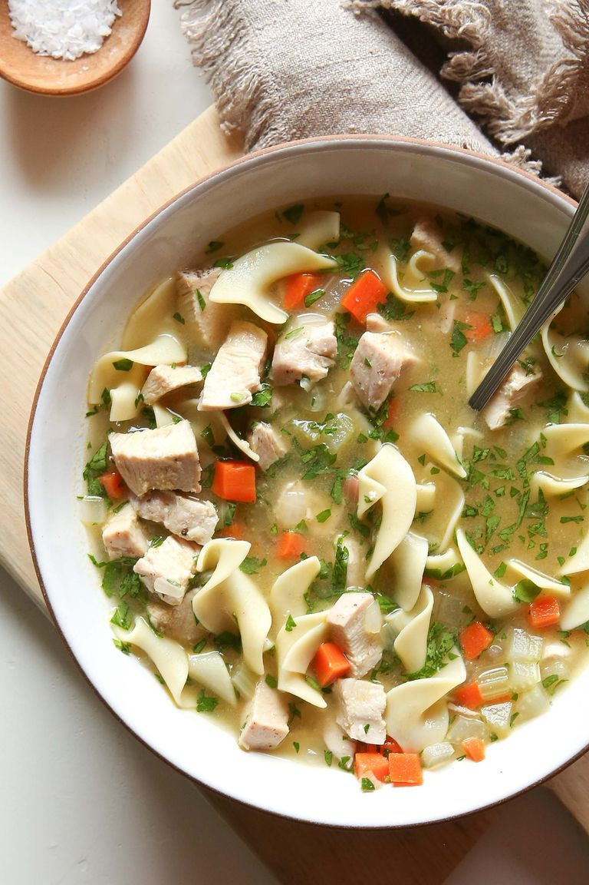

Chicken Noodle soup
Ingredients
- 1 tsp. extra-virgin olive oil
- 1 c. diced onion
- 2 celery stalks, diced
- 2 carrots, diced
- 2 cloves garlic, minced
- 1 lb boneless chicken breast
- kosher salt and black papper
- 32 oz. low sodium chicken stock
- 1 lbs eggnoodles
- 1/4 c freshly chopped parsley
Directions
- In a large pot over medium heat, heat oil. Add onions, celery, and carrots and cook until softened, 6 minutes. Add garlic and thyme and cook until fragrant, 1 minute more.
- Move vegetables to one side of the pot and add chicken. Season with salt and pepper and cook until no pink remains, 6 to 8 minutes. Add stock and 1/2 cup of water and bring to a boil.
- Add noodles and cook according to package instructions. Season to taste with salt and pepper. Add parsley and serve immediately.
See the original recipe here!
Contact Me
Send me an email!
University of Montana
32 Campus Drive
Missoula, MT 59812